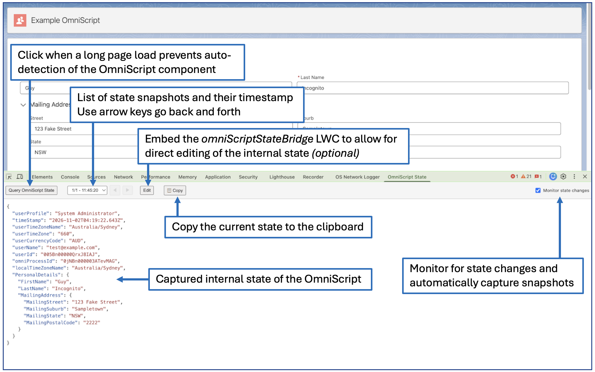
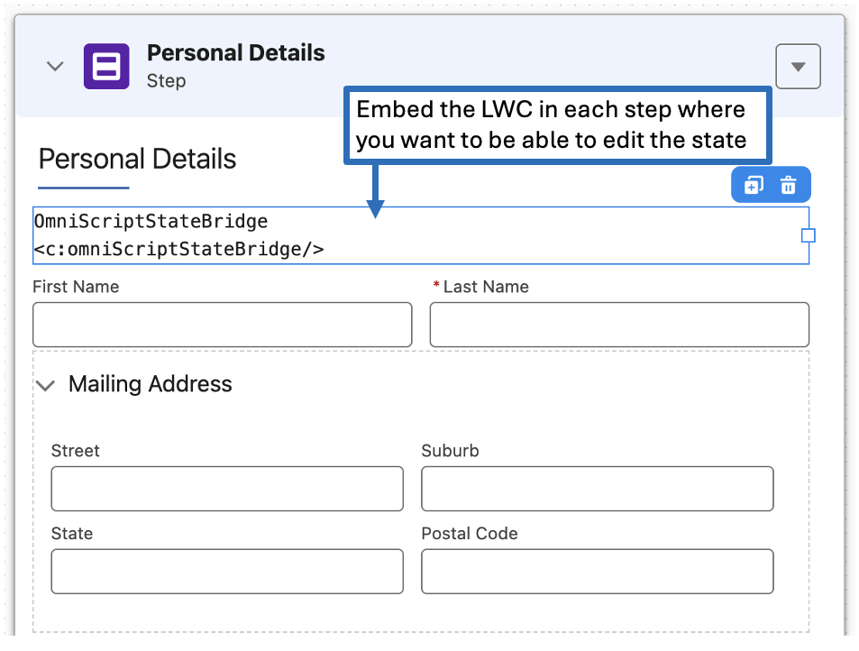
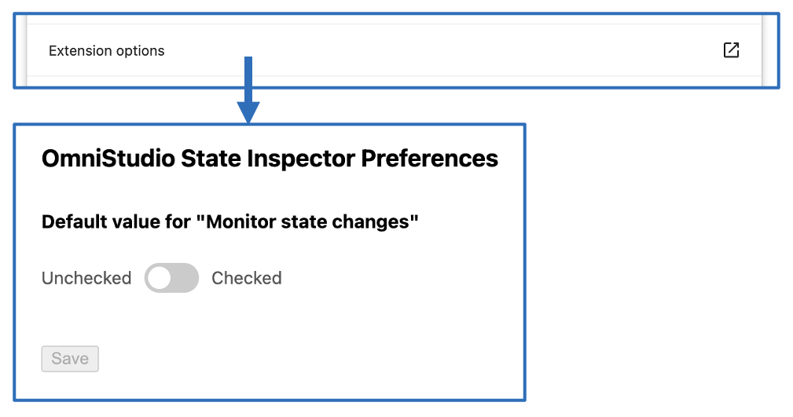

View and track changes to OmniScript component state. Edit state in-line for development and troubleshooting.
Note: This extension has only been tested with the standard OmniStudio runtime.After loading page with an embedded OmniScript, open the developer tools and select the "OmniScript State" tab.

If you want to directly edit the state from the console, embed the OmniScriptStateBridge LWC into the steps of the OmniScript. It has no visible UI, it's just there to receive a new state JSON and update the OmniScript.

The default value of "Monitor state changes" can be set in the extension options screen:
